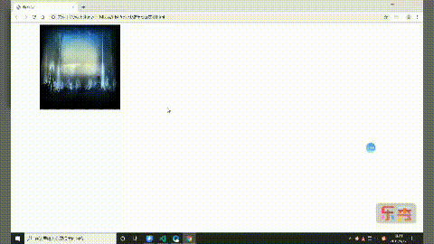

一、对transition属性的认识
1、transition 属性是一个简写属性，可用于设置四个过渡属性：
transition-property 过渡效果的 CSS 属性的名称（height、width、opacity等）。
transition-duration 完成过渡效果需要时间。
transition-timing-function 规定速度效果的速度曲线。
transition-delay 过渡效果何时开始（延迟时间）。
注：如果 transition-duration属性时长为 0，就不会产生过渡效果。
2、渐变函数的值：
渐变函数是transition-timing-function；
其中贝塞尔曲线的预设值
ease渐快，匀速，减慢cubic-bezier(0.25,0.1,0.25,1)
ease-in渐快，匀速cubic-bezier(0.42,0,1,1)
ease-out匀速，减慢cubic-bezier(0,0,0.58,1)
ease-in-out和ease类似，但比ease的加速度大（幅度大）cubic-bezier(0.42,0,0.58,1)
linear全程匀速cubic-bezier(0,0,1,1)
3、简写方式：transition：css属性名 过度时间 渐变函数值 延迟时间；
二、简单动画实例操作
1、先插入两张图片
<div class="A">
<img src="img/吃药.jpg" alt="">
<img src="img/main_bg.jpg" alt="">
</div>2、给图片设置样式
<style>
.A {
margin: auto 100px;
height: 400px;
width: 600px;
position: relative;
}
.A img:nth-child(1) {
height: 300px;
width: 300px;
position: absolute;
}
.A img:nth-child(2) {
height: 300px;
width: 300px;
position: absolute;
transition: opacity 3s ease-in 2s;
}
.A img:nth-child(2):hover {
opacity: 0;
}
img {
height: 300px;
width: 300px;
}
</style>
3、得到的动画效果是：
